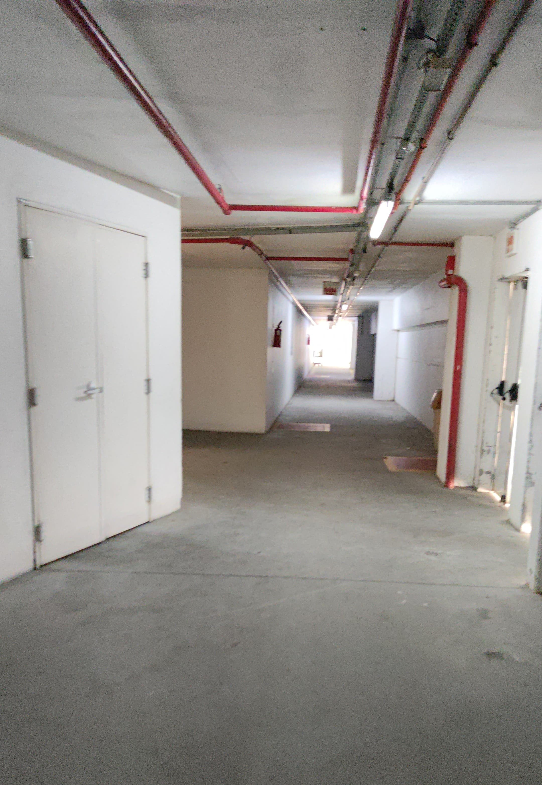

Carregando...
No dia 9 de Janeiro de 2025, às 14:46 eu estava no intervalo do trabalho, sentado na calçada da doca dos funcionários do shopping.
Você passou por mim, depois parou, olhou para trás e decidiu vir falar comigo.
A calçada da doca virou nosso ponto de encontro, mas por causa do Sol, posteriormente mudamos o ponto de encontro para esse corredor:
